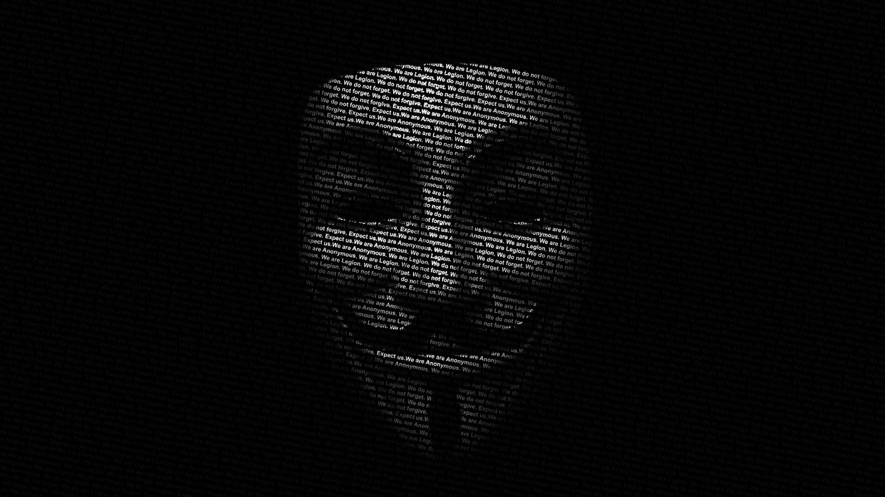
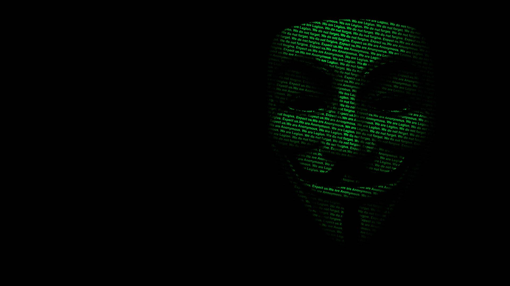
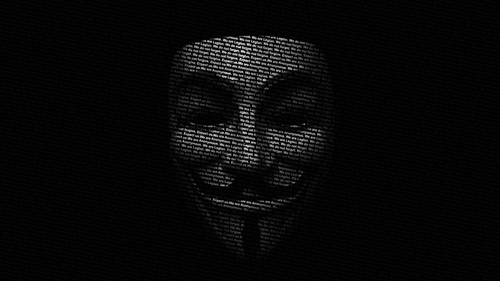
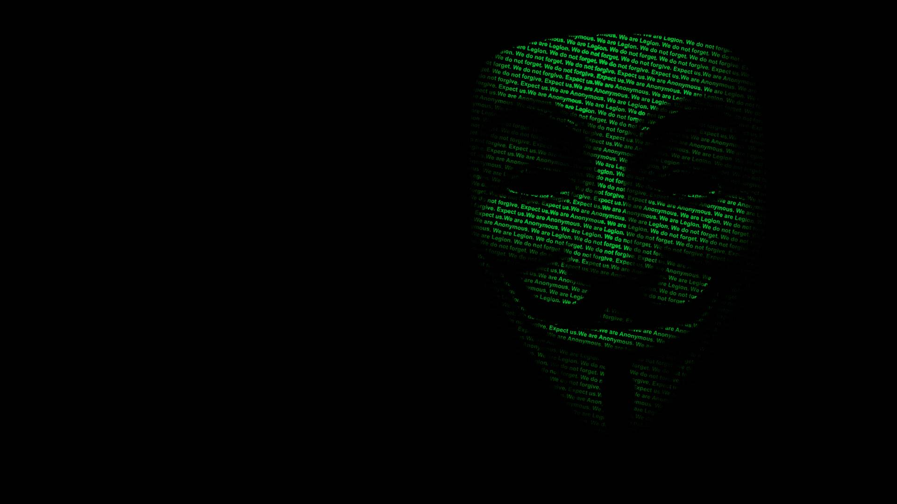

Zagrożenia w internecie
Internet niesie ryzyko cyberprzestępczości, takiej jak phishing, malware i kradzież danych, które mogą prowadzić do poważnych konsekwencji finansowych i naruszenia prywatności.
Użytkownicy internetu są narażeni na niebezpieczne treści, takie jak przemoc, pornografia czy treści ekstremistyczne, co może negatywnie wpływać na ich zdrowie psychiczne i emocjonalne.
Cyberprzemoc i stalking online stanowią poważne zagrożenie, prowadzące do zastraszania, szantażu i nękania, z długotrwałymi skutkami dla ofiar.
Uzależnienie od internetu to rosnący problem, który może prowadzić do izolacji społecznej, problemów zdrowotnych i utraty kontroli nad codziennym życiem.
 


